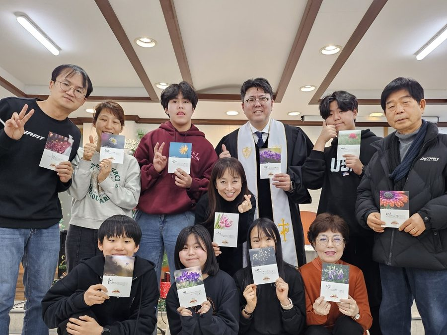

큰샘교회
교회소개
예배안내
온라인 주보
KEUNSAEM METHODIST CHURCH
말씀을 읽고
배우고
가르치자
기독교대한감리회 큰샘교회는
말씀과 기도로 세워지는 공동체입니다.
주일예배
오전 11시
성경공부
주일 오후 1시
아침예배
오전 7시
TODAY AT KEUNSAEM
오늘의 통독과 말씀묵상
매일 아침 7시 말씀묵상으로 하루를 엽니다
오늘의 통독
불러오는 중
잠시만요
아침 QT
아침 QT 예배
매일 아침 7시 말씀묵상으로 하루를 엽니다
RECENT SERMONS
최근 설교
2026-09-06
약속을 지키시는 하나님
창세기 12장 1-3절 ↗
2026-08-30
우연이 아니라 성령님이 하십니다
주보 보기 ↗
2026-08-23
생명의 성령의 법이 나를 살린다
주보 보기 ↗
OUR COMMUNITY
함께 걷는 믿음의 가족

ABOUT KEUNSAEM
큰샘교회
기독교대한감리회 큰샘교회는
말씀과 기도로 세워지는 공동체입니다.
경기 광명시 기아로 23 (소하동) 4층
010-2534-0407